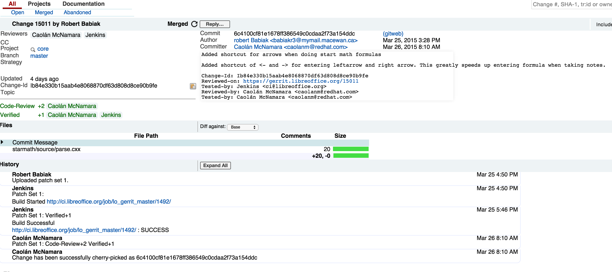

My personal Github IO page
I am a Software Engineer with fifteen years of experince, and I have no idea how to make this sound not like bragging. My first job was writting Airline ticketing software for Greyhound Air. Then I moved onto working on a industrial P.L.C. controller application called FrameWorks for GE-Fanuc.
After this I moved into the game development industry when I started with Bioware. My first game credit was Never Winter Nights. Knight of the Old Republic on the original x-box was my second game. The last game I worked on for Bioware was Mass effect 1.
This marked a big change in my life when I moved to Iceland to work for CCP hf on Eve-Online. This was the first MMO that had worked on and also marked my introduction to Python programming, specifically the Stackless variation. This is a language and development environment that I have fallen in love with.
I began by exploring the documentation around the Starmath module. The code was mostly impenetrable until is focused on one feature. I decided to duplicate the infinity sign as a getting started task. By searching the code base for infinity I found how the symbol was defined, how it was rendered and parsed. I was able to duplicate the infinity symbol and in the processed learned how the UI files are built, and how the .png files are packaged for icons.
After figuring how to duplicate the symbol I reverted all my changes and began looking more at the parser and rendering. The Parsing and rendering are tied together by a node class. This node class defines the character to render, the vertical and horizontal alignment and gets placed into a tree structure. A root symbol will have siblings for symbols that are adjacent to it, and child nodes that make up the parts of the symbol (for instance a super or subscript).
One of the features that I use alot in taking math nots is the RightArrow and LeftArrow keywords. When typing notes it is time consuming to type long identifiers. I decided to make shortcuts for the two by aliasing <- and -> to be the right and left arrows.
It turned out that the parsing structure already had the foundation to handle making a shortcut. I only needed to extend two if-then-else blocks to achieve my goal. I made this code change and built the code, tested both intended uses and using the combination of characters within other configurations of letters and numbers. After testing enough that I felt confident enough I committed my change. Then re-based with the main line and rebuilt the package, fast forward two hours, once the build was done I retested everything.
Now to push to Gerrit( https://gerrit.libreoffice.org ) and this is where I ran into problems. I followed the simple instructions for getting set up with gerrit, and it didn't work. Turns out that when I had cloned the libreoffice git repository iIhad used the read-only one. The readonly one automaticly rejects all push requests.
[3:31 PM]I am getting this error when I try to push to gerrit "fatal: remote error: access denied or repository not exported: /core" any ideas what i did wrong? [3:33 PM] Sarflin: did you change the push url to logerrit? [3:34 PM] Sarflin: https://wiki.documentfoundation.org/Development/gerrit/setup#Setting_yourself_up_for_gerrit_-_the_manual_way step 6
Moggi nailed it, I changed the url and pushed my change. This automatically submits a code review for my patch up to gerrit. It also starts a automatic compile of the patch and main code. This shows up as the Jenkins review on my code submission (see image). The other thing is the git push also triggered a message in the IRC channel.
[4:50 PM]Robert Babiak proposed a change to core: Added shortcut for arrows when doing start math formulas https://gerrit.libreoffice.org/15011
After a couple of days, I had gotten two other review and my patch was officially accepted. YAAAA!!!
Next up I want to add predefined projections, Linear Transformations, and augmented matrix. These will involve not only adding additional definitions (they are defined a lot like the infinite symbol) but help text also.
I chose to work on LibreOffice as my open source project to contribute to. I chose it because it is a software package I use regularly, I had been using Open Office but found out it is no longer open source, and it has some bug/ features that have annoyed me for a long time.
The first is that the formula editor doesn't use the whole width of the screen for entering markup text, and the other is that it is unstable at times and crashes. These crashes at times require you to delete the settings in order to restore normal operation. I figure I could at lest see about trapping a bug and reporting it if not fixing it.
Having used LibreOffice for the last couple of weeks I have found most of the worst bugs that were present in Open office are gone, but the annoying bit about math formula editing is still present. So my focus has shifted to extending the formatting of formulas to include common used formula layouts that are possible by combination of other, that could be better as there own format.
The fist step was to find the project site and get it installed, after a bit of poking around on IRC I started to do the installation of the dev environment.
[08:46] <Sarflin> I am looking for a guide to help me get libre office up and compiling on my mac, anyone have a sugestion?
[08:47] == lajava [~javi@fanzine.igalia.com] has joined #libreoffice-dev
[08:51] <lgodard> Sarflin: have a look at https://wiki.documentfoundation.org/Development/BuildingOnMac
[08:53] <Sarflin> thanks.
[08:57] == mlechner [~mlechner@pd95b8344.dip0.t-ipconnect.de] has quit [Quit: Ex-Chat]
[08:57] <Sarflin> Next question, can one of you point me at where the formula code is? I disloke that it doesn't use the full width for entering the formula markup, and want to add some more layouts? Basicly looking for a entry point to start learning?
[08:58] <beluga_> Sarflin: btw. fzsombor was looking into setting up a mac dev environment as well.. you should team up :)
The install instructions for Unix are prominently listed on there web site, but the Mac OS ones were a little harder to find. Turns out I located them by Google about the time Lgodard replied, and proceeded to install from https://wiki.documentfoundation.org/Development/BuildingOnMac .
The installation process was strait forward although where a few hiccups in getting compatible versions of some of the dependent software libraries installed. I also had to hide some of the default configurations like /opt/local/bin/pkg-config to make the default build process run.
LibreOffice installs into the user folder under the folder ~/lo and is build from here.
I had found a copy of LibreOffice on Github but it is not associated with the official repository as far as I can tell, and the developer install instructions refer to the source at http://gerrit.libreoffice.org which seems to be the official repository and where they do code reviews for code submissions. Active and open submissions are listed along with closed( accepted ).<
The IRC conversation also pointed me towards the formula code in the core/starmath folder, which contains it's own README which points to a form posting that documents the code layout.
Working on Eve-only I came to love the concept of main game devlopment being done in a interpreted language. A lot of developers say "You can do game in interpreted languages, it is to slow!", I disagree with this, the advantages out way the detractors.
When a game engine runs it only needs a few things optimized for speed above all else. The graphics rendering and I/O operations need to be as fast as possible, and non blocking. We can not have the game render waiting for a texture to be loaded from the resource pack. So most programmers would say, "we will create a worker thread to load resources and replace unloaded textures as they are loaded". That sounds wonderful, but it takes a lot of programming to make this happen in a thread safe manner.
But if you have an interpreted language like Stackless Python, you have micro threads. Spawning 1000's of threads for tasks becomes trivial. Now you write your high performance code in C/C++ language. This is then exposed to Python in a thread safe manner, and suddenly you have your graphics engine and IO running at full tilt with python puttering long doing game state update. For game state updtes and most game code in general an interpreted language is more than fast enough.
The micro threads have the advantage of simplifying some normmaly scary code. Take the example of loading a texture, under traditional codeing models, you would place a request into a queue and the worker thread would load the resource, and then call some callback to indicate the texture has now been loaded. With micro threads, you just spawn a micro thread to load the texture. And like sycronus code the function loads the texture, a blocking call, and then applys the texture to the game model. Because the creation of micro-threads are so light, we can afford to have 100's of micro threads blocking at any given time.
These micro-thread designs can be applyed to alot of game play situations. Where befor you would have somesort of timmer mechanisim checking to see if an amount of time has passed, once it did do something. With a micro-threading language you just have the thread sleep for a time and then do it. The code becomes much more readable as the entire logic is encapsulated in a single function. There is no having seperate function it initate, and another to respond on time out.
An interpreted language also has the advantage no compile times. Anyone who has sat through a 50 min. compile job can atest to the advantage of a rapid turnaround between code change, and code testing.
Google has now developed the GO programming language that brings the world of micro-threading into the land of compile high-performance code. I see this as the future where not only will the game code be running with micro threads, but if the underlining code is also capabale of micro threading then I can invision a time where a micro-thread created in python will execute in a micro-thread in GO with the advantages of multiple hardware cores stepping into to make the blending between interpreted and compiled code become meaningless.